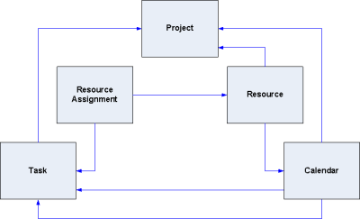

The MPXJ library allows various formats of Microsoft Project file formats, and file formats from other project planning applications to be read and written using a single consistent API in Java, .Net, or any other language which can be integrated with Java or .Net.
MPXJ is based around a "neutral" data structure which is used to represent project data, coupled with a set of format-specific reader and writer classes which understand how to read from and write to the various supported file formats.
The diagram below illustrates the key entities represented by the MPXJ data structure.
MPXJ currently allows project data to be read from eight distinct data sources using the following reader classes:
ProjectReader reader = new MPPReader ();
ProjectFile project = reader.read("example.mpp");
A similar arrangement exists for the writer classes:
ProjectWriter writer = new MPXWriter(); writer.write(project, "example.mpx");
Once you've read your project file, what next? The first things of interest are the tasks and resources which are present in the file.
ProjectReader reader = new MPPReader ();
ProjectFile project = reader.read("example.mpp");
for (Resource resource : project.getAllResources())
{
System.out.println("Resource: " + resource.getName() + " (Unique ID=" + resource.getUniqueID() + ")");
}
The code fragment above shows how we can retrieve a collection containing all of the resources present in the file, and iterate through them printing the resource name, ID and unique ID.
Many of the entities represented in MPXJ have some concept of a unique ID. Tasks and resources have two ID fields, the unique ID, which as its name suggests never changes and uniquely identifies a task or a resource, and the ID. The ID of a task or a resource is the sequential number which typically appears next to the task or resource when displayed in Microsoft Project. If the task or resource is moved up or down the list, this number will change depending on the position in the list. The unique ID never changes.
ProjectReader reader = new MPPReader ();
ProjectFile project = reader.read("example.mpp");
for (Task task : project.getAllTasks())
{
System.out.println("Task: " + task.getName() + " ID=" + task.getID() + " Unique ID=" + task.getUniqueID());
}
The code fragment above retrieves all tasks present in the file and prints details of their names, IDs, and unique IDs.
Methods are provided on the project to locate both tasks and resource using either their ID or their Unique ID, as the examples below illustrate.
Resource r = project.getResourceByUniqueID(Integer.valueOf(99)); Task t = project.getTaskByUniqueID(Integer.valueOf(99));
The methods shown above for retrieving all tasks present in a project file ignores the hierarchical task structure which Microsoft Project allows users to create. To understand the hierarchical task structure, the following methods are used to descend through the hierarchy, starting from the top.
List<Task> tasks = project.getChildTasks(); Task task = tasks.get(0); tasks = task.getChildTasks();
These methods are used in the following code fragment to print out an indented list representing the task hierarchy in the file.
public void listHierarchy(ProjectFile file)
{
for (Task task : file.getChildTasks())
{
System.out.println("Task: " + task.getName());
listHierarchy(task, " ");
}
System.out.println();
}
private void listHierarchy(Task task, String indent)
{
for (Task child : task.getChildTasks())
{
System.out.println(indent + "Task: " + child.getName());
listHierarchy(child, indent + " ");
}
}
As well as the hierarchical relationships between tasks, there is also a temporal relationship between them: this is typically used to indicate when a task can start in relation to the completion of an earlier task. The code fragment below shows the predecessor relationships between tasks.
for (Task task : file.getAllTasks())
{
List<Relation> predecessors = task.getPredecessors();
if (predecessors != null && predecessors.isEmpty() == false)
{
System.out.println(task.getName() + " predecessors:");
for (Relation relation : predecessors)
{
System.out.println(" Task: " + file.getTaskByUniqueID(relation.getTaskUniqueID()).getName());
System.out.println(" Type: " + relation.getType());
System.out.println(" Lag: " + relation.getDuration());
}
}
}
Tasks and resources are related by resource assignments. There is a method available on the ProjectFile class which will retrieve all resource assignments in the file. This is used by the code fragment below to provide an overview of all assignments.
for (ResourceAssignment assignment : file.getAllResourceAssignments())
{
Task task = assignment.getTask();
String taskName;
if (task == null)
{
taskName = "(null task)";
}
else
{
taskName = task.getName();
}
Resource resource = assignment.getResource();
String resourceName;
if (resource == null)
{
resourceName = "(null resource)";
}
else
{
resourceName = resource.getName();
}
System.out.println("Assignment: Task=" + taskName + " Resource=" + resourceName);
}
Resource assignments can also be retrieved on a task-by-task basis, as the code fragment below illustrates.
for (Task task : file.getAllTasks())
{
System.out.println("Assignments for task " + task.getName() + ":");
for (ResourceAssignment assignment : task.getResourceAssignments())
{
Resource resource = assignment.getResource();
String resourceName;
if (resource == null)
{
resourceName = "(null resource)";
}
else
{
resourceName = resource.getName();
}
System.out.println(" " + resourceName);
}
}
Finally, resource assignments can be viewed on a resource-by-resource basis, as the following code fragment shows.
for (Resource resource : file.getAllResources())
{
System.out.println("Assignments for resource " + resource.getName() + ":");
for (ResourceAssignment assignment : resource.getTaskAssignments())
{
Task task = assignment.getTask();
System.out.println(" " + task.getName());
}
}
Calendars are used to define working and non-working time, and are one of the more complex structures defined as part of a project. They are in turn used to define the time period over which a task is scheduled. There are two types of calendar: base calendars and resource calendars. Each base calendar provides a complete definition of the working and non working time for each day of the week. Resource calendars are associated with individual resources. Each resource calendar is derived from a base calendar; resource calendars may be unmodified in which case it will appear to be identical to the underlying base calendar, or the resource calendar may modify the working and non-working days. In this case these changes are "overlaid" on top of the working and non-working times defined by the base calendar. The calendars defined in a project can be retrieved using the method call shown below.
List<ProjectCalendar> calendars = file.getCalendars();
Normally a task without resource assignments will be scheduled with reference to the "Standard" (default) calendar defined as part of the project. This is retrieved using the method calls shown below.
ProjectCalendar defaultCalendar = file.getDefaultCalendar();
It is also possible to associate a specific calendar with an individual task. The method call below shows the calendar associated with a task being retrieved.
ProjectCalendar taskCalendar = task.getCalendar();
Bearing in mind that one calendar may be derived from another, care must be taken when choosing the methods called on a calendar instance: some methods are used to retrieve attributes defined as part of that specific calendar only, while others are used to descend through the hierarchy of calendars until an "actual" value is retrieved. For example the getDays method will retrieve an array of flags indicating the working/non-working/default state of each day of the week as defined by the current calendar. The getDay method however will test the current calendar to see if it is a working or non-working day. If the flag in the current calendar is set to "default", the method will use the base calendar from which the current calendar is derived to determine if the day is working or non-working.
As noted above a calendar contains a set of flags which represent each day of the week, these indicate the day of the week is working non-working, or "default". Where a day is set as "default", the working time for that day is taken from the underlying base calendar, if it is a resource calendar, or uses the default values provided by Microsoft Project if it is a base calendar.
If a particular day is defined as a working day, then the calendar will also contain a set of working hours for that day. The working hours for a day are defined by an instance of the ProjectCalendarHours class. This contains a collection of DateRange instances which defined the start and end times of each working period during the day.
Alongside the flags which control whether a day is working or non-working, and the working hours for each day, each calendar defines a set of exceptions which are used to "override" the default working or non-working hours for individual days or entire date ranges. Methods are provided to allow a list of all exceptions defined by a calendar can be retrieved, or to retrieve the exception which covers an individual date. Calendar exceptions are are represented by instances of the ProjectCalendarException class.
Although resource assignments on their own describe which resources are assigned to which tasks, and how much work they are going to do, this does not necessarily tell us how much work a resource will be doing on any particular date. In order to find this information, you will need to consult the timephased resource assignment data.
Each resource assignment has a pair of methods allowing you to retrieve timephased data, as shown by the example code below.
List<TimephasedResourceAssignment> planned = assignment.getTimephasedPlanned(); List<TimephasedResourceAssignment> complete = assignment.getTimephasedComplete();
Timephased resource assignment data is represented by instances of the TimephasedResourceAssignment class. This class is designed to provide a compact representation of the work carried out over ranges of days, rather than having to represent the work carried out on each individual day using a single class instance per day. Each TimephasedResourceAssignment defines four attributes: a start date, an end date, a total amount of work, and an amount of work per day.
For example, you may retrieve an instance of the TimephasedResourceAssignment class whose start and end date defines a five day period. The total work for the period is 40 hours, and the work per day is defined as 8 hours. This indicates that for the period in question, on each working day within the date range, 8 hours of work will be carried out. It is important to remember that non-working days are ignored, so for example if we have a 7 day period which spans a weekend, the total work could still be 40 hours, and the work per day 8 hours: only the 5 working days are allocated work, the non-working weekend days have zero hours of work performed.
The two lists defined above will contain multiple TimephasedResourceAssignment instances where different numbers of hours are worked on different days. Each contiguous range of dates where the same number of hours are worked in a day will be represented by one TimephasedResourceAssignment instance.
The two lists of timephased data represent completed (actual) work, and planned work respectively. These lists may overlap by a single day if they are being used to show a partially completed day's work. For example, during a normal 8 hour working day, if 4 hours of work has been completed, and 4 hours remains, then the list of completed timephased data will end with 4 hours of work which have been completed, and the planned work list will start with the 4 hours remaining on the same day.